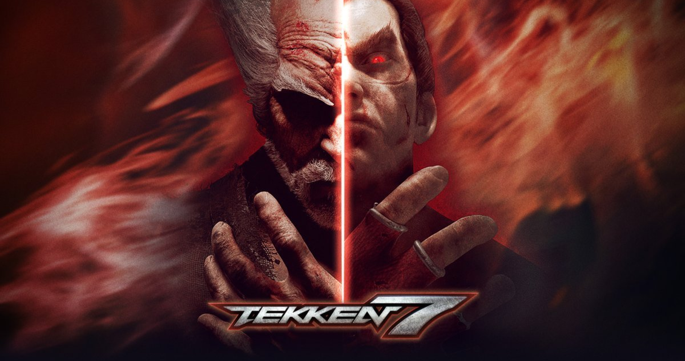

<!--NAVBAR-->
<section class="img-presentation">
    
</section>

<nav>
    <div class="nav-icon">
        
        
    </div>
    <div class="nav-links" [class.nav-links--open]="show_navbar">
        <div class="nav-close">
            <button (click)="mobileNavBar()" class="nav-close--button"><fa-icon [icon]="faX"></fa-icon></button>
        </div>
        <ul class="nav-list">
            <li><a href="./login" class="nav-link-mobile">Connexion</a></li>
            <li><a href="./" class="nav-link active">Accueil</a></li>
            <li><a href="./forum" class="nav-link">Communauté</a></li>
            <li><a href="./wiki" class="nav-link">Wiki</a></li>
        </ul>
    </div>
    <div class="nav-user">
        <a href="./login" class="nav-connect">Connexion</a>
        <button class="nav-burger" (click)="mobileNavBar()"><fa-icon [icon]="faBars"></fa-icon></button>
    </div>
</nav>
<!--END NAVBAR-->

<!--FOOTER-->
<footer>
</footer>
<!--END FOOTER-->